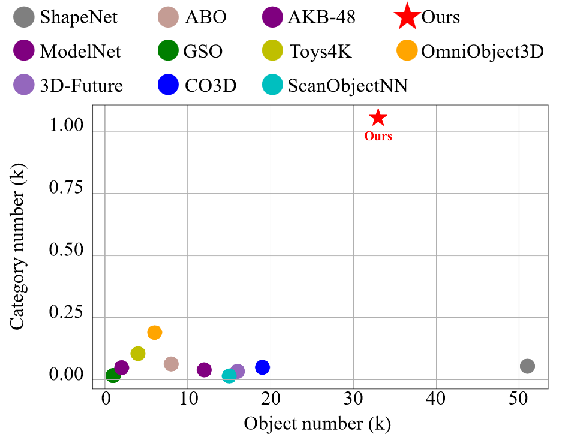
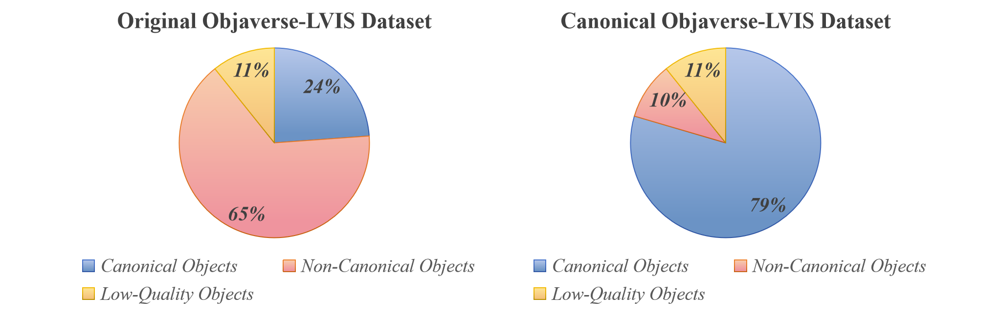

We introduce the Canonical Objaverse Dataset (COD), a new 3D canonical object dataset including 1,054 categories and 33k shapes—the largest number of categories among existing datasets.
In contrast to previous methods, we utilize a more efficient technique to make a 3D canonical dataset. First, we generate a pseudo-canonical dataset, using our one-shot 3D object canonicalization method. Next, we produce the final dataset by filtering out noisy and unaligned objects from 2D images, though rendering the pseudo-canonical object.
Remarkably, our approach simplifies object canonicalization to a single mouse click, while previous methods required cumbersome manual operations. This innovation reduces the time required for human involvement from approximately 1 minutes per object to just 1.5 second, greatly enhancing overall efficiency.
Comparison with the Existing Canonical Dataset
Compared to existing datasets, COD features the largest number of categories and shapes. More importantly, we obtain 33k valid data with just two annotators over approximately eight hours, completed the alignment of the 40k shape dataset, which demonstrates capability to handle larger-scale datasets. Next, we will process the Objaverse-1.0 dataset, which contains 800k shapes.

Data Statistics and Analysis
The figure below compares the Objaverse-LVIS dataset before and after applying our canonicalization method. Before canonicalization, only 24% of the objects were properly aligned. Following our processing, the proportion of canonicalized data increased by 55%, highlighting the effectiveness of our approach. Subsequently, we created the Canonical Objaverse Dataset (COD) by extracting 79% of canonical objects from the Canonical Objaverse-LVIS Dataset.

Comparison of Object and Semantic States Before and After Canonicalization